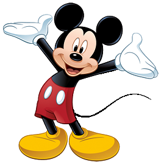

-
Pica Pau
Descrição
É uma ave conhecida por sua loucura contagiante e seu temperamento irritante. Gosta muito de infernizar a vida das pessoas (principalmente Meany Ranheta e Leôncio), além de ser muito folgado e guloso. Conforme a evolução do programa, o Pica-Pau adquiriu uma personalidade mais "sóbria" e uma boa índole, delineando melhor sua natureza de herói. Nasceu em uma casa na árvore localizada na Escócia e além disso, diz nos novos episódios que sua família é de origem escocesa. Não pode ser considerado nem um vilão, nem um herói, pois mesmo cometendo suas traquinagens, é o protagonista da série, portanto o Pica-Pau e considerado um anti-herói. Vive se metendo em confusões e vivendo aventuras com amigos e inimigos.
-
Pernalonga
Descrição
é o protagonista das séries de TV animadas Looney Tunes e Merrie Melodies. É o personagem mais popular de ambas as séries e o mascote da Warner Bros. Seus melhores amigos são Patolino e Gaguinho. O personagem surgiu em 1940, em um curta metragem chamado A Wild Hare ("O Coelho Selvagem"), dirigido por Tex Avery. Ao longo dos anos, Pernalonga estrelou mais de 160 curtas durante a Era de Ouro da animação, além de participar de outros filmes. Premiado com um Oscar de melhor curta-metragem de animação por Cavaleiro Pernalonga em 1958, e com uma estrela na Calçada da Fama de Hollywood, Pernalonga foi eleito como o melhor personagem de desenhos animados de todos os tempos pela revista estadunidense.
-
Mickey Mouse
Descrição
O personagem Mickey foi criado em 15 de maio de 1928, no curta animado mudo Plane Crazy. Todavia, antes que o trabalho pudesse ser finalizado, o som irrompeu nas telas do cinema. Desta forma, Mickey teve a sua estreia com o desenho sonoro intitulado "Steamboat Willie", que foi o primeiro desenho animado sonoro, apresentado no Colony Theatre em Manhattan, Nova Iorque, em 18 de novembro de 1928, para uma enorme plateia que aguardava ansiosamente pela primeira aparição de Mickey Mouse. Sua dublagem a partir de Steamboat Willie era desempenhada pelo próprio Walt Disney (entre 1928 e 1946). Depois de Walt Disney, foi James G. MacDonald que assumiu a vocalização do Mickey e em 1977, Wayne Allwine, um aprendiz de James G. MacDonald que foi a voz do Mickey até a sua morte em 2009. Atualmente, Mickey é dublado por Bret Iwan.